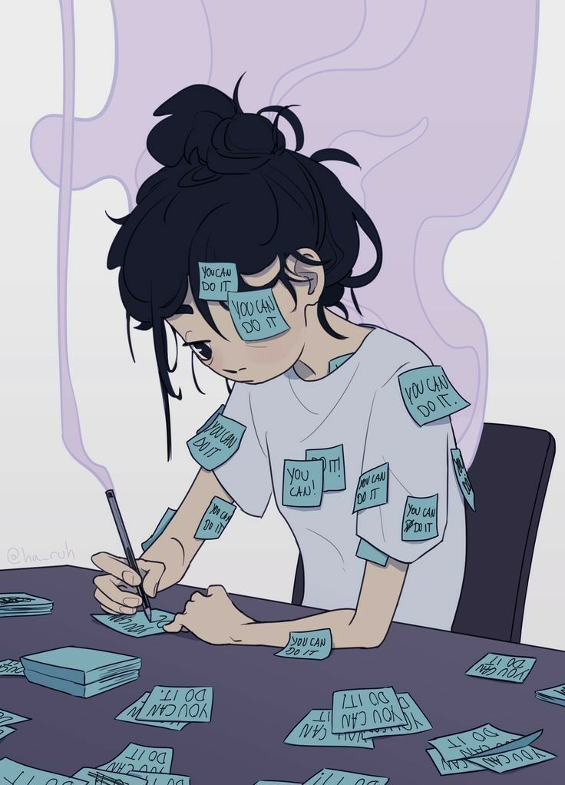
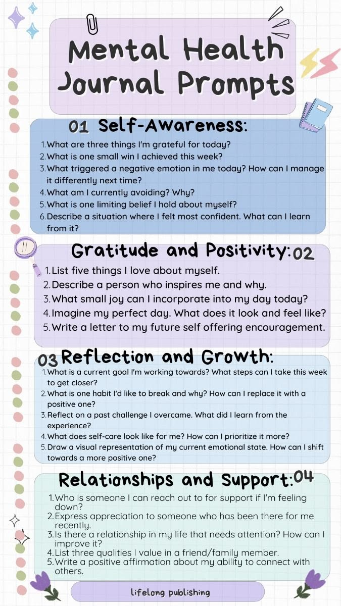
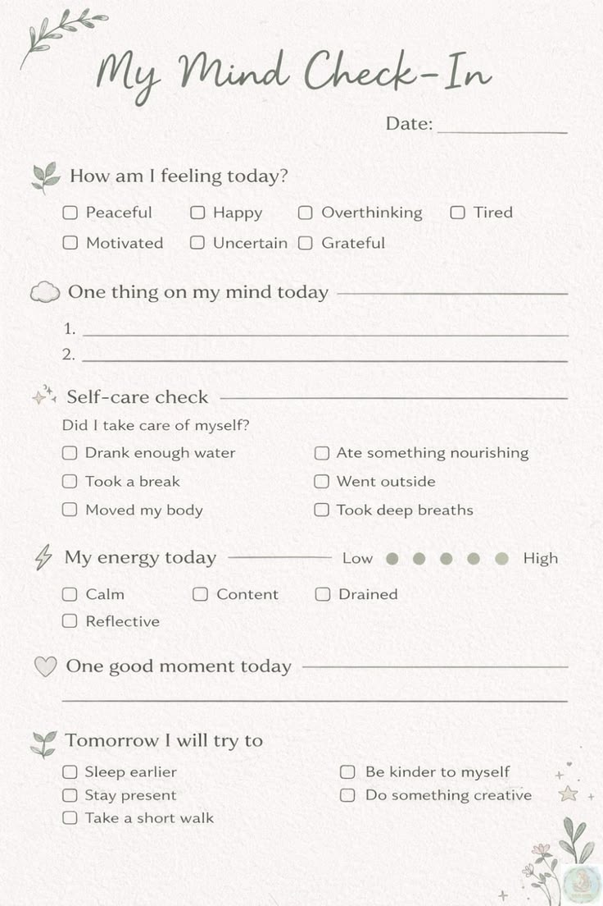

i didn't go looking for the realisation. it came looking for me.
someone who watches me closely — more closely than most — noticed that my baseline had shifted. when you spend enough time with someone you start recognizing the patterns. the way their usual repertoire starts to contract. the things that disappear first.
i'd been running on low for months. nothing dramatic. just moving through things. doing the work. showing up to classes. pushing ahead with the products. the kind of operation where you're functioning but not necessarily thriving. i thought it was normal. thought everyone felt like this. that the weight of everything was just the actual weight of everything and i was just supposed to carry it.



depression is not always loud. is not always crisis mode. is sometimes just the slow dimming of things. the way colors get slightly less bright. the way things that used to excite you become slightly more neutral. it's harder to notice because you acclimate. you get used to the lower baseline and start thinking that's just how you are now.
i've been doing the talk about it mental health work for a while. facilitating conversations about this exact thing for other people. and somehow still managed to miss it in myself. which is hilarious and tragic simultaneously.
the work now is actually acknowledging it instead of just pushing through. letting myself rest even when there are things that need to get done. being honest about my capacity instead of pretending to have more than i do. it's slower than the version of myself that was just grinding anyway. it's also more sustainable. still working on believing that. but i'm working on it.
← Back to Blog